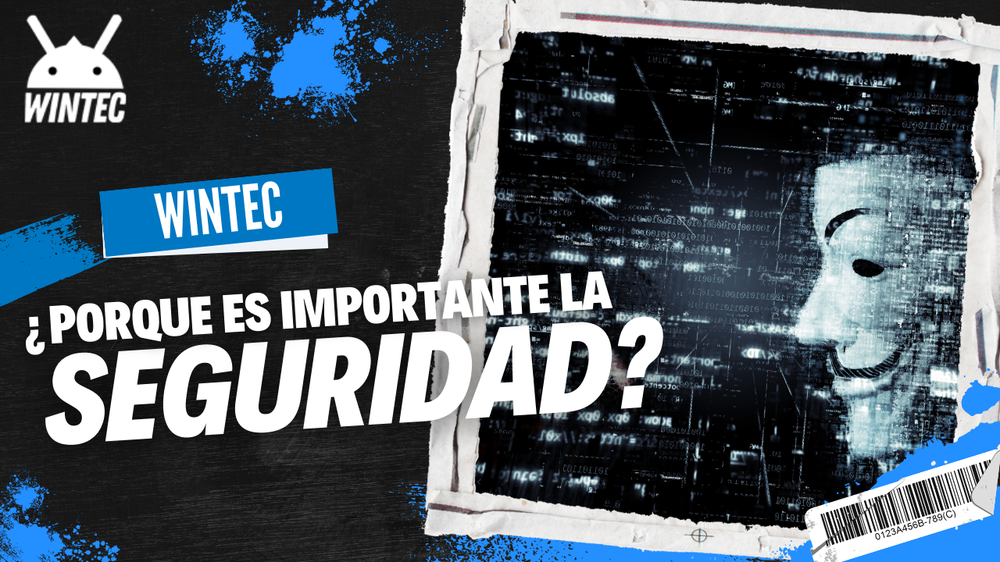

LA IMPORTANCIA DE LA SEGURIDAD CIBERNÉTICA EN EL 2023
En la era digital de hoy en día, la seguridad cibernética se ha convertido en un tema crítico y en constante evolución. Con la creciente dependencia de la tecnología y la interconectividad de los dispositivos, la protección contra las amenazas cibernéticas es más importante que nunca.
La seguridad cibernética se refiere a la protección de sistemas, redes y dispositivos contra ataques cibernéticos maliciosos, como el malware, los virus, el phishing y los hackers. Cada día, millones de personas y empresas en todo el mundo están en riesgo de sufrir ataques cibernéticos que pueden causar graves daños y costos.
En el ámbito personal, la seguridad cibernética es importante porque almacenamos cada vez más información en línea, como datos bancarios, información médica y fotos personales. Si esta información cae en manos equivocadas, puede ser utilizada para cometer fraudes, robos de identidad y otros delitos graves.
En el ámbito empresarial, la seguridad cibernética es crucial porque las empresas manejan grandes cantidades de datos sensibles, como información financiera y de clientes. Si estos datos se ven comprometidos, la reputación de la empresa puede verse gravemente dañada, además de tener que enfrentar costos legales y financieros significativos.
Además, la seguridad cibernética también es importante para garantizar la continuidad del negocio y la productividad. Un ataque cibernético exitoso puede provocar una interrupción en el funcionamiento de la empresa, lo que puede resultar en una pérdida de ingresos y clientes.
En resumen, la seguridad cibernética es importante tanto a nivel personal como empresarial. Es esencial estar al tanto de las amenazas cibernéticas y tomar medidas para proteger nuestros sistemas y datos en línea. Al hacerlo, podemos mantener nuestra información y nuestra privacidad seguras, y garantizar la continuidad de nuestros negocios y nuestra economía digital en general.